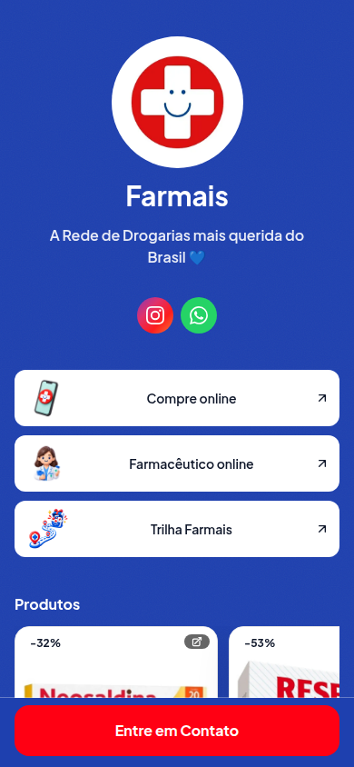
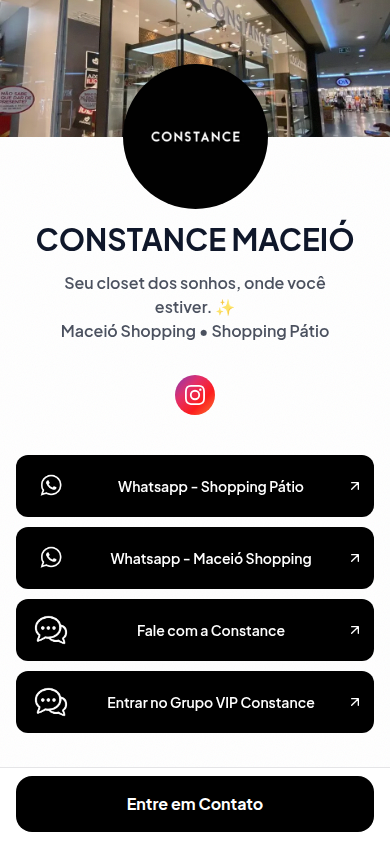
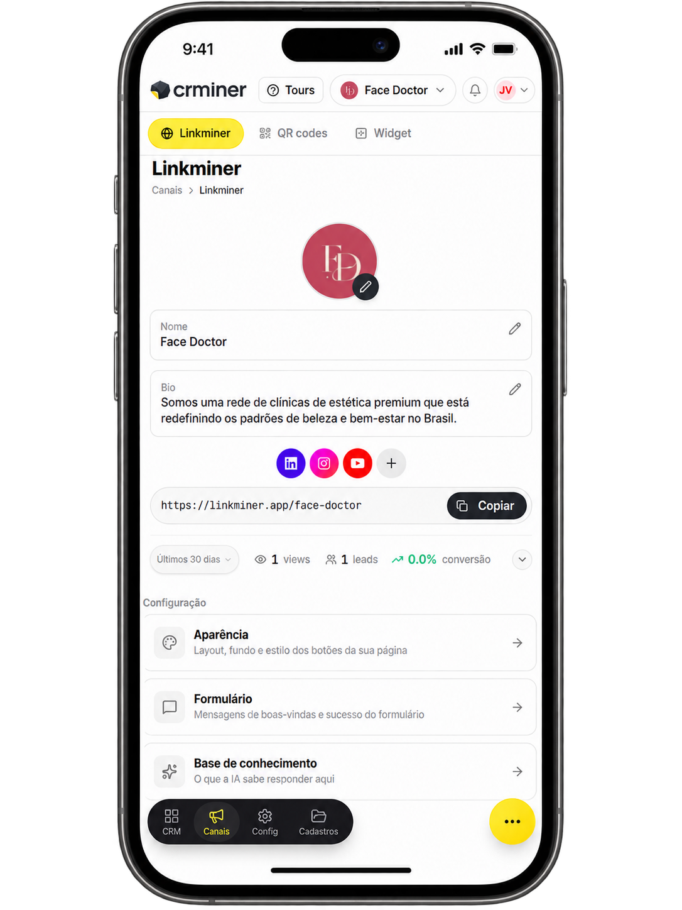
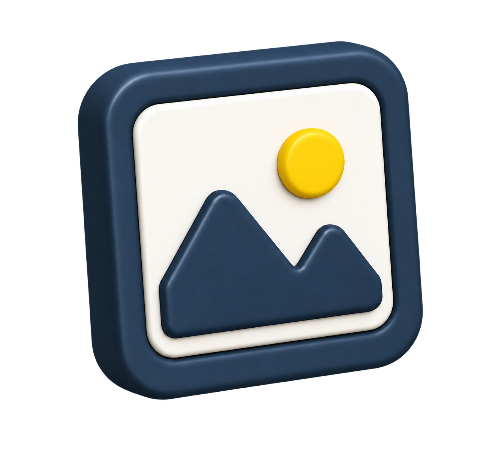

Centralize o que seu público precisa encontrar quando chega pelas redes sociais.
LinkMiner
Mais que um link na bio.
Mais que um link na bio.
Transforme visitas em oportunidades.
Reúna produtos, serviços, conteúdos e contatos em uma página sua — e transforme sinais de interesse em contexto dentro do CRMiner.
Criar meu LinkMiner grátisGrátis. Sem cartão de crédito.


Uma página LinkMiner publicada
FarmaisSeu cliente vê uma página.
Você vê uma oportunidade.
Quando uma interação vira lead, a IA resume o que essa pessoa demonstrou. O CRMiner recebe esse contexto para sua equipe continuar a conversa sem começar do zero.
Não entregue apenas um contato.
Entregue o interesse identificado, o contexto da conversa e uma indicação do que pode fazer sentido como próxima ação.
- Interesse resumido pela IA
- Contexto da conversa
- Próxima ação sugerida
Tudo o que você quer mostrar.
Em um lugar fácil de encontrar.
Organize sua presença digital e deixe claro o próximo passo para quem chega até você.
Uma página feita para a sua marca.
Produtos, serviços, redes sociais, links úteis, conteúdos, contatos, cupons, benefícios e promoções podem viver no mesmo endereço.
ProdutosServiçosContatoLinks úteis


Não são apenas cliques.
São sinais sobre o que interessa ao seu público. Acompanhe quais pontos do seu LinkMiner estão gerando interesse e oportunidades.
Criar meu LinkMiner grátisUm link que você pode levar para qualquer lugar.
Compartilhe uma página em vez de enviar vários links separados.
Conecte vitrines, balcões e materiais físicos ao digital.
Crie um destino organizado para lançamentos, ações ou ofertas.
Sua página precisa parecer sua.
Personalize cores, fundos, botões e outros detalhes para deixar o LinkMiner alinhado à identidade da sua marca.
Cores da sua marca

Capas e fundosBotões e destaques
Comece sem pagar nada.
Antes do seu primeiro link.
O essencial para começar agora.
O que é o LinkMiner?
É uma página própria para reunir produtos, serviços, conteúdos, contatos e links importantes da sua marca.
Qual é a diferença para uma página de links?
Além de organizar seus destinos, o LinkMiner pode transformar uma interação configurada para captura em um contato com origem e interesse registrados no CRMiner.
Posso usar na bio do Instagram?
Sim. Você pode compartilhar o endereço do LinkMiner na bio e em outros canais.
Posso colocar produtos e serviços?
Sim. Produtos, serviços, conteúdos, contatos, ofertas e cupons podem ser apresentados na página.
Como o LinkMiner transforma interesse em oportunidade?
Em pontos configurados para captura, o visitante informa seus dados e o contexto da interação pode chegar ao CRMiner.
Preciso utilizar todo o CRMiner?
Não necessariamente. O LinkMiner pode ser um ponto de entrada para sua operação, e você pode evoluir o uso conforme sua necessidade.
Posso usar QR Code com o LinkMiner?
Sim. O endereço da página pode ser usado em QR Codes e outros materiais.
Preciso instalar algum aplicativo?
Não é necessário instalar um aplicativo para acessar uma página LinkMiner.
O LinkMiner é gratuito?
Sim. Você pode criar seu LinkMiner gratuitamente, sem cartão de crédito.
Sua próxima oportunidade pode começar em um link.
Crie seu LinkMiner, compartilhe com seu público e transforme sinais de interesse em uma próxima conversa.
Criar meu LinkMiner grátisGrátis. Sem cartão de crédito.